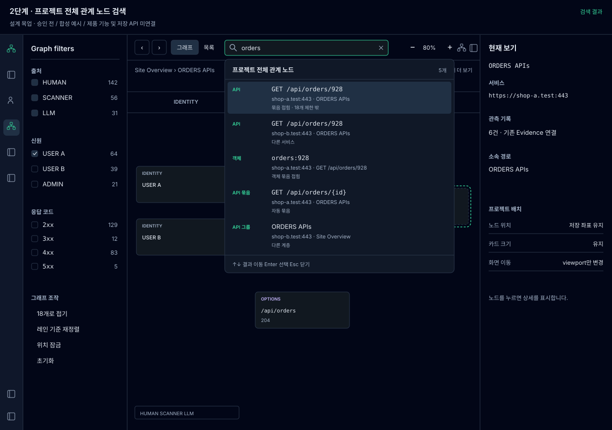

위 상태 버튼으로 흐름을 비교하세요. 그림 안의 입력·노드·필터는 정적 예시입니다. 실제 검색, 저장, HTTP 전송과 연결하지 않았습니다. 상세 설계 문서
승인된 상태별 화면 목업 · 기존 1단계 디자인과 배치 유지 동작을 기준으로 구성했습니다. 예시 도메인·숫자·기록은 모두 합성입니다.

위 상태 버튼으로 흐름을 비교하세요. 그림 안의 입력·노드·필터는 정적 예시입니다. 실제 검색, 저장, HTTP 전송과 연결하지 않았습니다. 상세 설계 문서